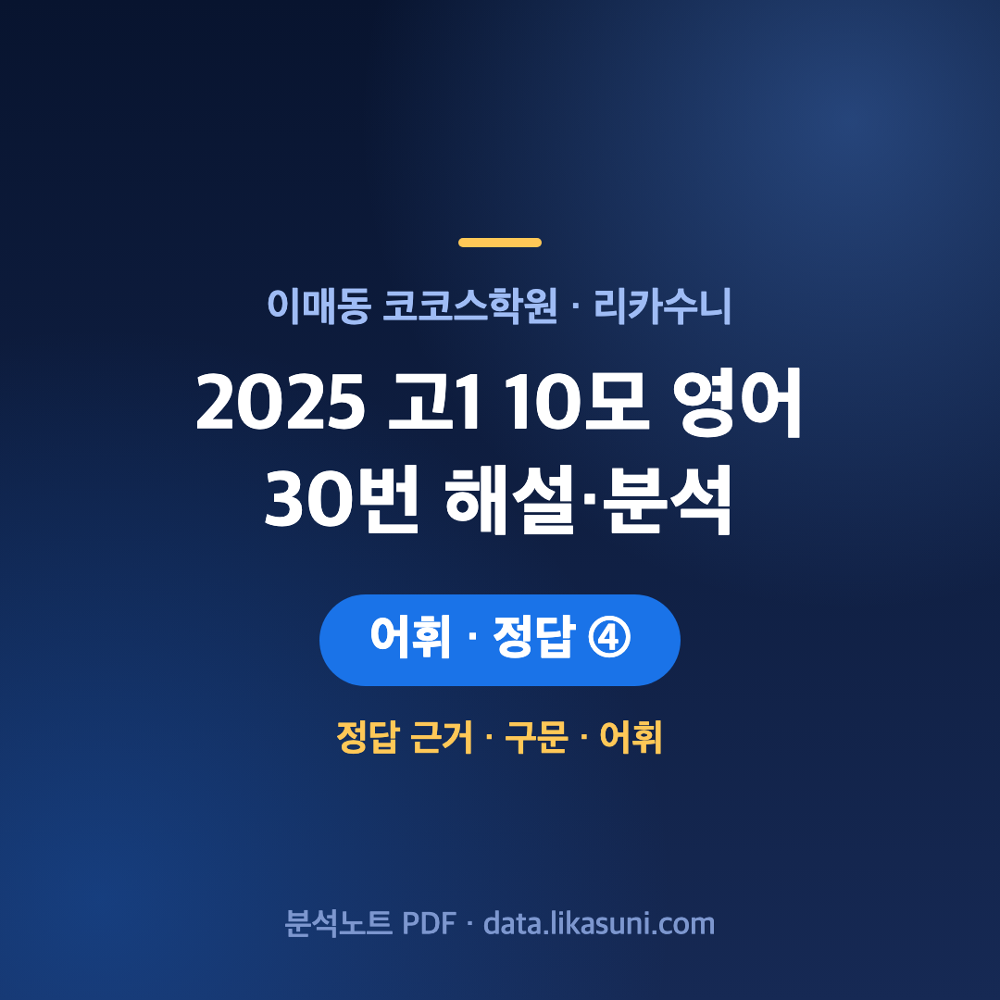
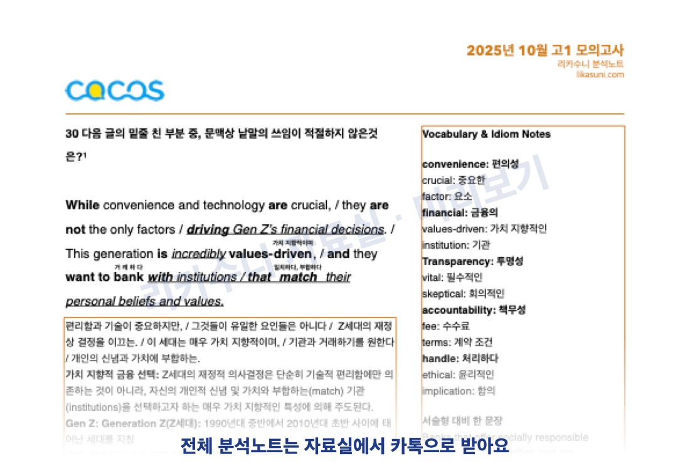

2025 고1 10모 영어 30번 어휘 해설·분석이에요. (2025 10월 고1 영어 모의고사 · 전국연합학력평가 · 낱말의 쓰임 · 정답 ④ beneficial → harmful)
정답 근거, 나머지 번호가 맞는 이유, 구문(양보의 while · 관계부사 where · B as well as A · 전치사 + 동명사 병렬), 어휘를 정리했고 분석노트 pdf 받는 곳은 글 아래에 있어요.
안녕하세요, 이매동 코코스학원 리카수니 원장입니다.
학생 요청으로 만든 분석노트를 바탕으로 정리했어요. 시험지를 옆에 펴 놓고 보시면 더 잘 보여요.
· 시험: 2025년 10월 고1 전국연합학력평가 영어
· 번호: 30번 (밑줄 친 낱말의 쓰임이 적절하지 않은 것)
· 정답: ④ beneficial (→ harmful)
Z세대의 금융 선택은 편리함과 기술만이 아니라 '가치'가 이끈다는 글이에요.
투명성·책무성을 중시하고, 윤리적인 은행 업무와 지속 가능한 투자를 원하며, 사회적 책임과 환경을 생각하는 은행이 Z세대의 관심을 끈다는 흐름이에요.
· 윤리를 중시하는 Z세대는 자기 돈이 '해로운' 관행에 쓰이지 않기를 바라요.
· ensuring that their money is not being used to fund ④ beneficial practices 는 '유익한 관행에 쓰이지 않게'가 되어 흐름과 반대예요.
→ harmful(해로운)이 되어야 해서 정답 ④예요.
· ① lack → 투명성을 중시하니 책무성이 '부족한' 기관을 의심해요.
· ② clearly → 투명성 = 수수료·약관을 '명확하게' 알려야 해요.
· ③ important → 윤리를 중시하는 세대라 윤리적 은행 업무가 더 '중요'해요.
· ⑤ attract → 가치에 맞는 은행이 Z세대의 관심을 '끈다'.
어휘 문제는 글 전체의 방향(여기선 '가치·윤리 중시')과 반대로 가는 단어를 찾으면 돼요.

1) 양보의 while / 현재분사 후치 수식
→ While convenience and technology are crucial, they are not the only factors driving Gen Z's financial decisions.
2) 관계부사 where / the brands (that) they support
3) B as well as A (A뿐만 아니라 B도)
4) 전치사 in + 동명사 3개 병렬 (investing, supporting, ensuring) / 진행형 수동태 is not being used
5) 주격 관계대명사 that + 동사 2개(offer ~ and are committed to) → 주어 Banks, 동사 will attract
· convenience 편의성
· crucial 중요한
· factor 요소
· financial 금융의
· values-driven 가치 지향적인
· institution 기관
· match 일치하다, 부합하다
· transparency 투명성
· vital 필수적인
· skeptical 회의적인
· accountability 책무성
· fee 수수료 / terms 계약 조건
· handle 처리하다
· ethical 윤리적인
· implication 함의
· sustainable 지속 가능한
· fund 자금을 대다
· beneficial 유익한 ↔ harmful 해로운
· committed to ~에 헌신하는
· attract 끌다
분석노트에 '서술형 대비 한 문장'(Banks that offer socially responsible investment opportunities and are committed to environmental sustainability will attract Gen Z's attention.)과 영어 핵심 요약(Core Summary)을 해석과 함께 정리해 두었어요.
아래 자료실 페이지에서 30번 해설을 보고, 카카오 로그인 후 번호를 고르면 카톡으로 분석노트 PDF 를 받을 수 있어요.
같은 페이지 위쪽 회차 메뉴에서 2025 고1 10모 영어 분석노트·변형문제·단어 pdf, 전과목 문제지·정답 pdf와 등급컷도 볼 수 있어요.
▶ 2025 고1 10모 영어 30번 해설 (리카수니 자료실)
https://data.likasuni.com/moe/go1/2025-10/eng/30/
분당 이매동 코코스학원은 초등·중등·고등 영어와 수학을 가르쳐요.
모의고사·수능특강·내신 대비가 궁금하시면 편하게 문의해 주세요.
· 홈페이지: https://www.cocosedu.co.kr/
· 주소: 경기 성남시 분당구 판교로 476 2층